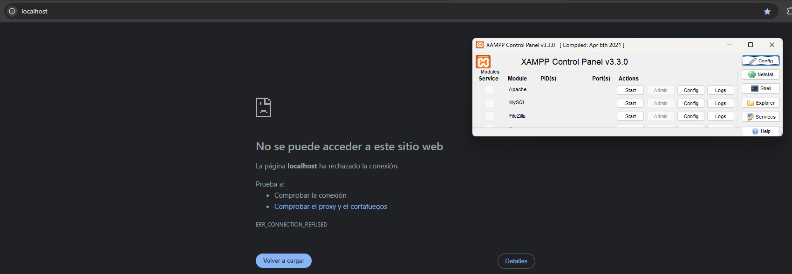
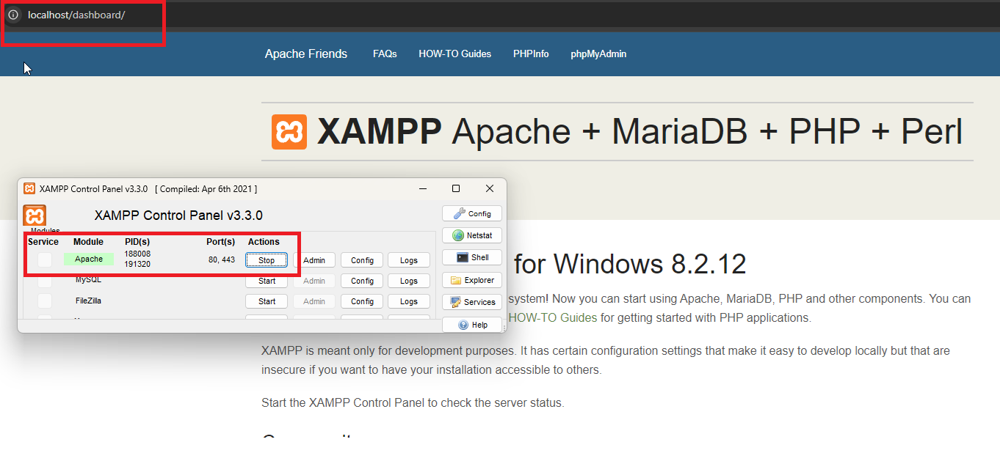
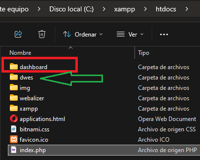
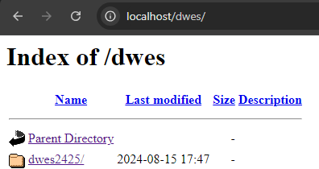
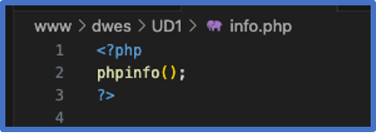
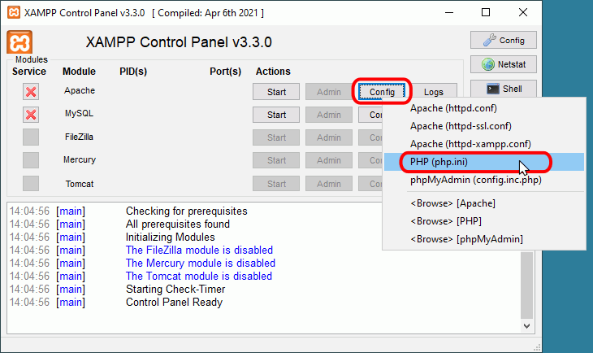
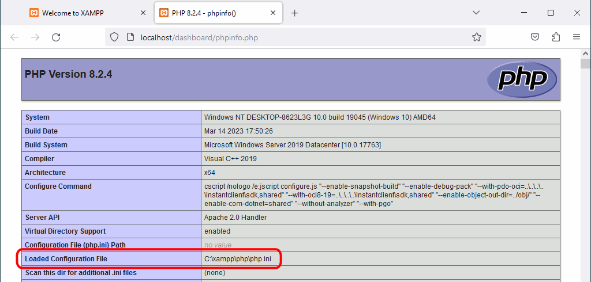
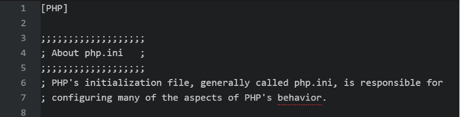
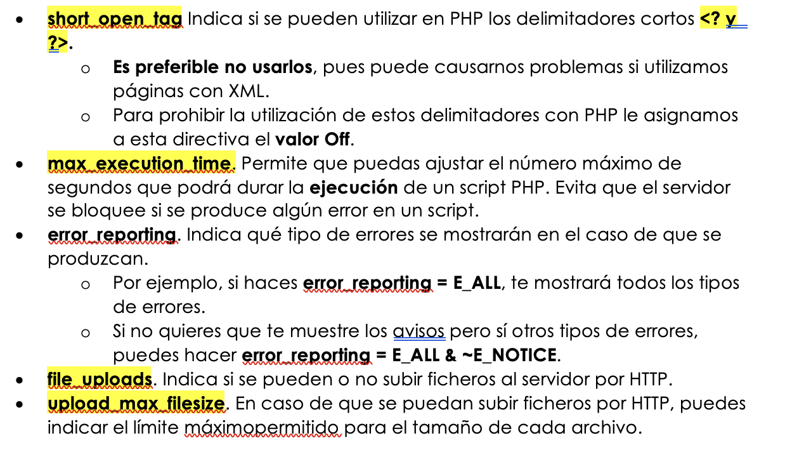
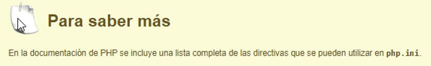

5 Configurando el entorno PHP
Para realizar las primeras prácticas y conocer el lenguaje PHP, tendremos que configurar un servidor local que puede hacerse a través del paquete XAMPP
XAMPP (https://www.apachefriends.org/es/index.html) es una distribución compuesta con el software necesario para desarrollar en entorno servidor. Se compone de las siguientes herramientas en base a sus siglas:
- X para el sistema operativo (de ahí que se conozca tamnbién como LAMP o WAMP).
- A para Apache.
- M para MySQL / MariaDB. También incluye phpMyAdmin para la administración de la base de datos desde un interfaz web.
- P para PHP.
- la última P para Perl.
Desde la propia página se puede descargar el archivo ejecutable para el sistema operativo de nuestro ordenador. Se recomienda leer la FAQ de cada sistema operativo con instrucciones para su puesta en marcha.
Si lo hacemos con este tipo de paquete XAMPP, tendremos nuestro servidor local y en nuestro equipo, una carpeta llamada htdocs donde se alojarán todos nuestros archivos.

Existen otras formas de crearnos un entorno de desarrollo para PHP como puede ser es a través de Docker, con las ventajas que conlleva tener las mismas características a la hora de trabajar en equipo, pero por ahora con este método será suficiente.
5.1 Introducción a la Instalación del Entorno PHP en Windows
PHP es un lenguaje de programación del lado del servidor ampliamente utilizado para el desarrollo web. Para comenzar a desarrollar con PHP en un entorno Windows, es necesario seguir algunos pasos para instalar y configurar correctamente el entorno. A continuación, se presenta una guía básica para instalar PHP en Windows:
- Descargar PHP : Visita el sitio web oficial de PHP y descarga la versión más reciente compatible con tu sistema operativo-
- Descomprimir el archivo : Una vez descargado el archivo ZIP, descomprímelo en una carpeta de tu elección, por ejemplo,
C:\php. - Configurar las variables de entorno : Añade la ruta de la carpeta PHP a las variables de entorno del sistema para que puedas ejecutar comandos PHP desde cualquier terminal.
- Configurar el servidor web : Si utilizas Apache, edita el archivo
httpd.confpara incluir el módulo de PHP. Si prefieres usar el servidor web integrado de PHP, simplemente ejecutaphp -S localhost:8000desde la terminal. - Verificar la instalación : Crea un archivo
index.phpcon el siguiente contenido y colócalo en la carpeta raíz de tu servidor web:PHP
<?php
phpinfo();
?>
Luego, abre tu navegador y navega a http://localhost/index.php para verificar que PHP está funcionando correctamente.
Con estos pasos, tendrás un entorno PHP básico configurado en tu sistema Windows, listo para comenzar a desarrollar aplicaciones web.
Video: Cómo instalar XAMPP
5.2 Creación de la carpeta dwes en htdocs
Una vez hayas instalado XAMPP, podremos acceder a él a través de cualquier navegador en la dirección "localhost", siempre que tengamos el servicio Apache ejecutado. De lo contrario apararecerá:

Si todo está correcto, se podrá ver el panel inicial desde localhost

Esto lo hace porque el archivo index.php lo redirige a la carpeta dashboard, como se apreciaba en la URL de la imagen anterior.
Así, podremos crear en el directorio htdocs, que en Windows está en
C:\xampp\htdocs
Crea una nueva carpeta llamada dwes, y es dentro de esta donde crearemos los archivos y carpetas a lo largo del curso.

Si todo está correcto, cambiaremos "~~dashboard~~" por "dwes" para que nos dirija y nos muestre nuestros archivos y carpetas.

Incluir php al PATH
Para que PHP funcione correctamente, necesitamos agregar PHP a las variables de entorno de Windows , algo muy necesario si queremos por ejemplo que php nos quede de manera global, nos servira para el manejador de dependencias composer y si queremos ejecutar scripts php en la consola.
Lo primero que debemos hacer es acceder a las variables de entorno de windows , podemos hacerlo usando el buscador y digitando la palabra “variables” solamente y vermos un item con el nombre “Editar las variables de entorno del sistema”.
Complétalo usando el siguiente enlace o algún recurso o vídeo similar.
5.3 Programación Web con PHP
PHP es un lenguaje de guiones de propósito general, pero diseñado para el desarrollo de páginas web dinámicas utilizando código embebido dentro del lenguaje de marcas. Su sintaxis está basada en la de C / C++, y por lo tanto es muy similar a la de Java. Aunque lo puedes hacer de otras formas, los delimitadores recomendados para incluir código PHP dentro de una página web son <?php** **y ?>.

Hola Mundo en PHP
Para comenzar a practicar con PHP, lo haremos mediante la siguiente guía
El archivo php.ini
El archivo de configuración de PHP es el archivo php.ini , un archivo de texto sin formato. En php.ini las líneas comentadas empiezan por el carácter punto y coma (;).
En Windows, el archivo php.ini se encuentra en el directorio C:\xampp\php\php.ini
Se puede abrir directamente el archivo php.ini haciendo clic en el botón "Config" correspondiente a Apache y eligiendo opción correspondiente:
El código se ejecuta por un entorno de ejecución con el que se integra el servidor web (normalmente utilizando Apache con el módulo mod_php ). La configuración tanto del servidor web Apache, como de PHP, se realiza por medio de ficheros de configuración .
- El de Apache es httpd.conf , y
- el de PHP es php.ini .
- Este fichero, php.ini , puede encontrarse en distintas ubicaciones. La función phpinfo() que ejecutaste antes te informa, entre otras muchas cosas, del lugar en que se encuentra almacenado el fichero php.ini en tu ordenador.** **
- En entornos Linux suele ser en */etc/php5/apache2/php.ini*
- En entornos Windows se suele ubicar en: C:\xampp\php\php.ini , C:\wamp\bin\apache\apache2.4.51\bin\php.ini ...



Directivas php.ini
Se comentan a continuación algunas directivas de configuración de PHP, aunque también se puede consultar el manual de PHP. Antes de modificar cualquier archivo de configuración, se recomienda hacer una copia de seguridad del archivo de configuración original.
En el archivo de configuración php.ini, las líneas que comienzan por ; (punto y coma) son líneas comentadas, es decir, que no se tendrán en cuenta cuando PHP cargue el archivo. En el archivo de configuración se pueden encontrar bloques de varias líneas comentadas que explican el significado de una directiva y más adelante una línea sin comentar que establece el valor de la directiva. Un error de principiante bastante común es modificar el valor de la directiva en una línea comentada, lo que no sirve para nada.
Algunas de las directivas más utilizadas que figuran en el fichero php.ini son:


https://www.php.net/manual/es/ini.list.php
https://www.mclibre.org/consultar/php/otros/php-configuracion-1.html
Referencias
5.4 Actividades para Trabajar con el Archivo php.ini en XAMPP
Preámbulo: Hacer una Copia de Seguridad
Antes de realizar cualquier modificación, es crucial hacer una copia de seguridad del archivo php.ini original para evitar problemas si se produce un error.
- Navega a la carpeta donde se encuentra el archivo
php.ini. - Ruta típica en XAMPP:
C:\xampp\php\php.ini. - Haz una copia de seguridad del archivo, por ejemplo, renómbralo a
php.ini.backup.
Actividades
1. Modificar el Límite de Memoria
- Tarea: Aumenta el límite de memoria disponible para PHP.
- Instrucción: Busca la línea
memory_limity cámbiala amemory_limit = 256M.
2. Habilitar Errores de PHP
- Tarea: Configura PHP para que muestre todos los errores y advertencias.
- Instrucción: Establece
display_errors = Onyerror_reporting = E_ALL.
3. Configurar el Límite de Tiempo Máximo de Ejecución
- Tarea: Cambia el tiempo máximo de ejecución de un script PHP.
- Instrucción: Modifica
max_execution_timeamax_execution_time = 60segundos.
4. Aumentar el Tamaño Máximo de Subida de Archivos
- Tarea: Incrementa el tamaño máximo permitido para la subida de archivos.
- Instrucción: Modifica
upload_max_filesizeaupload_max_filesize = 50Mypost_max_size = 50M.
5. Configurar la Zona Horaria
- Tarea: Establece la zona horaria predeterminada para las funciones de fecha y hora de PHP.
- Instrucción: Busca
date.timezoney ajusta según tu zona horaria, por ejemplo:date.timezone = "America/Mexico_City".
6. Habilitar Extensiones de PHP
- Tarea: Activa una extensión de PHP que no esté habilitada por defecto.
- Instrucción: Descomenta (elimina el
;) la línea correspondiente a la extensión deseada, por ejemplo,extension=gd.
7. Configurar el Manejador de Sesiones
- Tarea: Cambia el tiempo de expiración de una sesión de PHP.
- Instrucción: Modifica
session.gc_maxlifetimeasession.gc_maxlifetime = 3600(1 hora).
8. Configurar el Error Log
- Tarea: Establece una ruta específica para guardar los registros de errores de PHP.
- Instrucción: Ajusta
error_logaerror_log = "C:\xampp\php\logs\php_error.log".
9. Ajustar la Configuración del OpCache
- Tarea: Optimiza el rendimiento de PHP activando el OpCache.
- Instrucción: Busca las configuraciones de
opcachey asegúrate de queopcache.enable = 1yopcache.memory_consumption = 128.
10. Personalizar el max_input_vars
- Tarea: Aumenta el número máximo de variables de entrada para prevenir errores al enviar formularios grandes.
- Instrucción: Modifica
max_input_varsamax_input_vars = 3000.
Finalización
Después de realizar las modificaciones, guarda el archivo php.ini y reinicia el servidor Apache desde el panel de control de XAMPP para que los cambios surtan efecto.